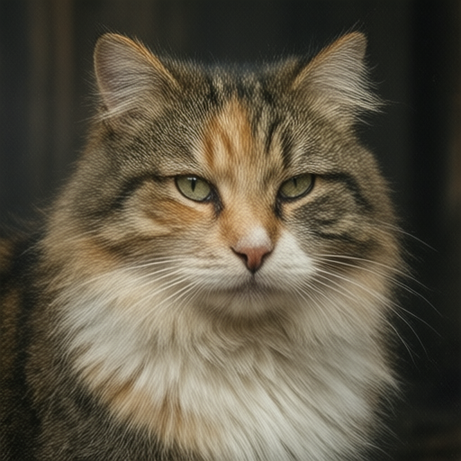
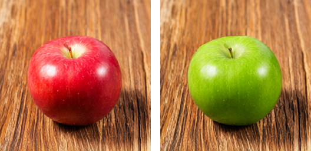
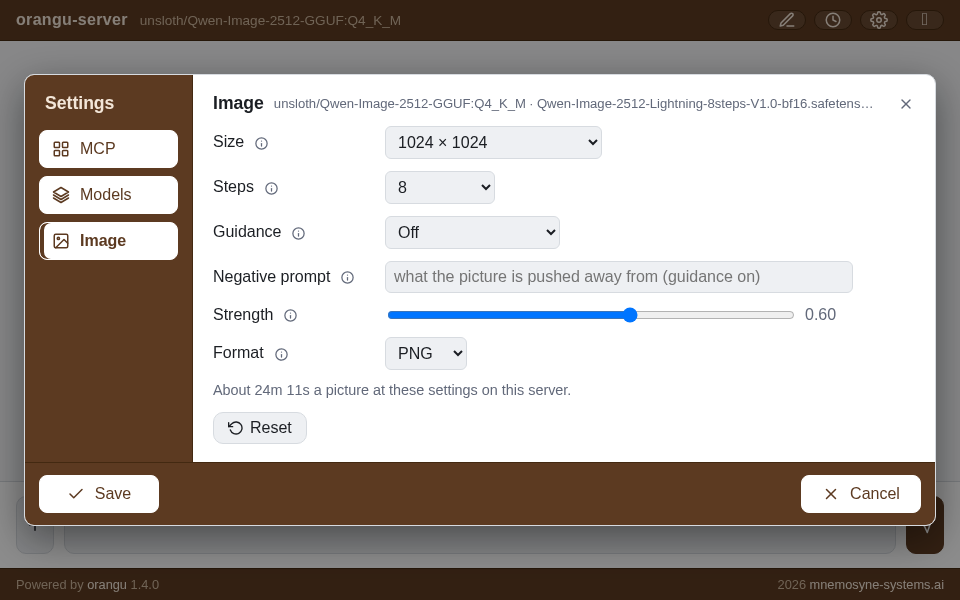

Image generation
orangu-server draws pictures as well as text. Point it
at an image model and every chat turn in the web console — and every
/v1/chat/completions or /v1/images/generations
request — is answered with a picture instead of a reply. This chapter is
the practical side: what to download, how to start the server, and what
the web console’s settings do. The Inference server chapter’s
Image generation section has the reference for every
key, and the HTTP endpoints chapter the API; the Inference
server internals chapter says how the pipeline is built.
orangu serves text and images. There is no audio or video path.

The model, in four files
The recommended image model is Qwen-Image 2.1 (Alibaba’s 2026 text-to-image and image-editing model: a 7-billion-parameter transformer, better typography and portraits than its predecessor, pictures with transparency, and edits of a picture you give it), served from GGUF like any language model. It needs three companions beside it, and the server fetches all four with one command:
orangu-server download unsloth/Qwen-Image-2.1-GGUF:Q4_K_M- The transformer —
qwen-image-2.1-Q4_K_M.gguffromunsloth/Qwen-Image-2.1-GGUF, 3.9 GiB: the model that draws. - The text encoder —
Qwen3-VL-8B-Instruct-UD-Q4_K_XL.gguffromunsloth/Qwen3-VL-8B-Instruct-GGUF, 4.8 GiB: the picture is conditioned on this model’s reading of the prompt. Any quantization of it serves; one already undermodelsis used rather than fetched. - The vision projector —
mmproj-F16.gguffrom the sameunsloth/Qwen3-VL-8B-Instruct-GGUF, 1.1 GiB: the text encoder’s eyes, which let the model read a picture you attach and edit it (see Editing a picture below). Any of the repository’smmproj-*.ggufserves — downloading the encoder brings the one matching its quantization, and one already beside the encoder is used. Without it the model still draws; an attached picture is then only a starting point. - The VAE —
vae/qwen_image_2.1_vae_bf16.safetensorsfromunsloth/Qwen-Image-2.1-FP8, 644 MiB: turns the model’s latents into RGBA pixels, and an attached picture’s pixels back into latents.
A companion the models directory already holds is skipped, so a
second quantization fetches only itself. Any quantization of the
transformer works — list shows them as
Yes (qwen_image_2_1); Q4_K_M is the one
measured here. The text encoder is an ordinary language model —
list shows it, and it can be served alone — and the VAE is
read as published. The transformer GGUFs carry no metadata at all; the
server recognises the model by its tensors.
There is no step-distilled adapter for 2.1, and none is needed: the model is released to run forty steps without guidance, one transformer pass each, and its prompt is run through the transformer once per picture rather than once per step.
Memory. Serving at Q4_K_M takes about
10 GB of resident memory, most of it the transformer and the encoder
mapped from disk and shared with the page cache — 11 GB with the vision
projector — and 7 GB more for the 8-bit copy of the transformer that
makes it about twice as fast, which the server makes only on a machine
with 21 GB or more. A machine with 16 GB is enough.
Time. A picture is minutes on a CPU, not seconds. On
the twelve-core ARM board this manual’s numbers come from, a step costs
4.8 s at 256 × 256, 9.6 s at 512 × 512 and 50 s at 1024 × 1024. By
default (image_cache = easy) over half the steps reuse the
last transformer passes rather than run their own, so the defaults (1024
× 1024, forty steps) take about 14 minutes and 512 × 512 at twenty steps
about two. The picture is close to, but not the same as, the one every
step would give; image_cache = off runs them all (about 34
minutes at the defaults). Those numbers take a copy of the transformer’s
weights as 8-bit integers (7 GB) that the server makes at startup when
the machine has at least 21 GB (image_weights, see the
Inference server chapter); without it a step is about twice as
long at 512 × 512. A discrete GPU is faster; an integrated one usually
is not, and the server measures before it commits: under
backend = auto it times one transformer linear on the
device and on the CPU and keeps whichever wins, saying so at startup
([image] calibration …). The wait is never a surprise: the
startup log says what a picture at the defaults costs on this machine,
and the console counts it down.
Transparent pictures
Qwen-Image 2.1 draws with an alpha channel, and decides from the prompt whether to use it. Its publishers’ wording is the one to use:
This is an RGBA image with transparency. A cute cartoon dragon sticker. The image has alpha channel and the background is transparent.
PNG, WebP, GIF and SVG keep the transparency; JPEG, which has none, shows the picture on white.
Editing a picture
Attach a picture and Qwen-Image 2.1 edits it: the text encoder reads the picture together with the prompt, the picture’s latents sit beside the prompt inside the transformer, and a new picture is drawn that keeps what the prompt does not ask to change — make the apple green, change the background to a beach, replace the text “BLOOM” with “orangu”, remove the background. The picture comes back at the attachment’s proportions, the longer side at the configured size.

Write the prompt as an instruction. The transparency wording above works here too: an edit of a transparent picture, or one asked to become transparent (remove the background), comes back with its alpha channel.
An edit costs a little more than a picture from a prompt alone: the
attachment is read once (about six seconds at 256 × 256, a minute and a
half at 1024 × 1024), and every step attends over its tokens as well as
the prompt’s. The attachment is read at the picture’s size but never
larger than it is itself (image_reference_size = source): a
256 × 256 photo edited into a 1024 × 1024 picture is read at 256 × 256,
which is as fast as a picture from a prompt alone and no less faithful,
since upsampling it adds nothing to read.
image_reference_size = output reads every attachment at the
picture’s size, as diffusers does. Strength does not apply —
the whole schedule is run, the attachment guiding it rather than being
noised over.
Without the vision projector (or with vision = none in
the configuration) an attachment is a starting point instead, as for
Qwen-Image 2512: see Drawing below.
Qwen-Image 2512, the previous model
The earlier Qwen-Image (the 2512 release, 20 billion
parameters) is still served, as qwen_image, with four
files:
orangu-server download unsloth/Qwen-Image-2512-GGUF:Q4_K_Mfetches the transformer (12.3 GiB), its text encoder
unsloth/Qwen2.5-VL-7B-Instruct-GGUF:Q4_K_M (4.4 GiB), its
VAE Comfy-Org/Qwen-Image_ComfyUI‘s
qwen_image_vae.safetensors (243 MiB), and the
Lightning adapter
lightx2v/Qwen-Image-2512-Lightning’s
Qwen-Image-2512-Lightning-8steps-V1.0-bf16.safetensors (811
MiB), which makes a picture in eight unguided steps instead of fifty
guided ones. It takes about 16 GB of resident memory with the adapter
merged in, and at the defaults (1024 × 1024, eight steps) about 20
minutes on the same board. The two models’ companions are different
files and do not mix; each finds its own.
Starting the server
The image model is served in its own role, image, and
--image is the flag that asks for it:
orangu-server --imageThat prints the model table with every model that is not an image model greyed, and pre-selects the first image model — Enter takes it. The server then reports the companions it found and the wait:
qwen_image_2_1 text encoder …/Qwen3-VL-8B-Instruct-UD-Q4_K_XL.gguf
qwen_image_2_1 VAE …/vae/qwen_image_2.1_vae_bf16.safetensors (int8)
[image] a picture at the defaults (1024x1024, 40 steps, guidance off) takes about 1 h 52 min here; image_size = 512x512, image_steps = 20, image_cfg_scale = 1 would be about 8 minThe first estimate comes from a startup calibration and is on the pessimistic side; after the first picture it is the measured rate.
A configuration that names the model directly does the same without
the table, and orangu-server -i writes one — pick the image
model at its model prompt and the wizard asks for the
picture keys, each offering what the server does without it:
[orangu-server]
models = ~/.cache/huggingface/hub
model = unsloth/Qwen-Image-2.1-GGUF:Q4_K_M
[web]
port = 8200Nothing else is needed: the defaults are the model’s own — 1024 ×
1024, forty steps, guidance off. A config for this board would add
image_size = 512x512 and image_steps = 20 for
pictures in minutes. (For Qwen-Image 2512 the adapter under
models is used because it is there,
image_lora = auto, and with it the steps and guidance the
adapter was made for: 8, off.) The keys, should you want them, are in
the Inference server chapter’s What a request
gets: image_size, image_steps,
image_cfg_scale, image_negative_prompt,
image_strength, image_format, and
image_lora (auto, none for the
base model at its fifty guided steps, or another adapter’s file — the
4-step Lightning file halves the wait for a rougher picture).
The picker will not serve an image model in a language model’s role
(--code 16 is an error that says so), nor a language model
under --image; bundle refuses image models,
which do not fit one file.
In the web console
Open the console (http://<host>:8200, or whatever
[web].port says). The topbar names the model; the gear at
its right is Settings.
Downloading from the console
Settings › Models is the model manager: the same
table as orangu-server list, with a download box above it.
Type unsloth/Qwen-Image-2.1-GGUF:Q4_K_M and press the
download button; the transformer and its three companions arrive
together, with progress per file. When it is there, its row’s
Load button restarts the server on it — the console
reconnects on its own — and from then on the model name in the topbar is
the image model and the pane’s header says image beside
it.
Picture settings
Settings › Image holds what every picture gets when the prompt does not say otherwise. Each row has an (i) that explains it on hover.

| setting | choices | |
|---|---|---|
| Size | 256 × 256 up to 2048 × 2048, or
Other… for any WIDTHxHEIGHT |
Both sides a multiple of 32 for Qwen-Image 2.1 (16 for Qwen-Image 2512); a preset the served model cannot draw, such as 1280 × 720 on 2.1, is greyed. 1024 × 1024 is the default; 2048 × 2048 is 2.1’s native size, and hours on a CPU. 512 × 512 is a preview in minutes |
| Steps | 4, 8, 20, 40, 50, or a number | The time is linear in them. Qwen-Image 2.1 is made for 40, and 20 is a usable draft. For 2512, the 8-step adapter is made for 8, the 4-step file for 4, and the base model without an adapter needs 50 |
| Guidance | Off, 4, 6, or a number | Classifier-free guidance pushes the picture towards the prompt and away from the negative one; it doubles the work of every step. Qwen-Image 2.1 is released to run with it off (stable-diffusion.cpp’s examples use 6). For 2512: off under a Lightning adapter, which was trained without it, and 4 for the base model |
| Negative prompt | text | What the picture is pushed away from — blurry, text, extra limbs. Read only when guidance is on |
| Strength | 0 – 1 | For a picture started from an attached one (not an edit — see Editing a picture): how much of the schedule to run over it. 1 ignores the attachment’s content and keeps only its size; 0 returns it unchanged; 0.6 keeps the composition and redraws the rest |
| Format | PNG, JPEG, GIF, WebP, SVG | What the picture comes back as. PNG and WebP are lossless and keep a transparent picture’s alpha, JPEG smaller (a transparent picture on white), GIF one frame on 256 colours, SVG a document of the picture’s size carrying it as PNG (there is no pixels-to-vector). A picture started from an attachment comes back in the attachment’s own format |
Under the rows a line says what a picture at these settings costs on this server — from the server’s own measured rate, before anything is sent — and updates as you change them. Reset puts the form back to the configuration file’s values.
The dialog’s footer is shared by every pane: Save makes what the panes hold the server’s — these become the defaults every turn draws at, from any browser, until the server restarts — and closes; Cancel (or the ×, or Escape) drops the edits.
The usual rhythm on a slow machine: set 512 × 512
and 20 steps, Save, and send the prompt for a draft in
a few minutes; when the composition is right, set 1024 ×
1024 and 40 steps and send it again for the
picture. (With Qwen-Image 2512 and its adapter: 512 × 512 at 4 steps,
then 1024 × 1024 at 8.) A seed is drawn per picture and shown in its
caption; the API takes a seed to draw the same one again at
another size.
Drawing
Type a prompt and send it. The robot blinks beside a countdown — Starting · 8m 20s, then Step 2/20 · 7m 05s — which is the server’s estimate, corrected at every step. The reply is the picture at the size set, with a save control under it that downloads the full-size file and a caption with the size, steps and seed. Pictures are kept beside the session and come back through History.
Attach a picture (the + menu’s Image item; PNG, JPEG, GIF, WebP and SVG are read) and, with Qwen-Image 2.1 and its vision projector, the prompt edits it — see Editing a picture above. With Qwen-Image 2512, or 2.1 without the projector, the model instead starts from the attachment rather than from noise, running Strength of the schedule — a rough sketch redrawn as a painting, or a photograph in another style. Either way the picture keeps the attachment’s proportions and comes back in its format.
A long picture can be stopped with the console’s Stop button, or by closing the tab: the work ends within seconds, at the next transformer block. Ctrl+C on the server ends it as quickly, whatever it was doing.
MCP servers, while you are there
Settings › MCP is the same dialog’s third pane,
unrelated to pictures: the MCP servers named in
orangu-server.conf for orangu clients to use, with Add,
Edit and Delete, written to the file by the same Save. It is described
with the configuration in the Inference server chapter.
Through the API
Everything the console does, a client can:
POST /v1/images/generationsis OpenAI’s Images API with the local model’s knobs added (size,steps,cfg_scale,negative_prompt,seed,output_format, and animagewithstrengthto start from).stream: truesends a progress event per step, the first one — step 0 — carrying the estimate before any work.POST /v1/chat/completionson the same server treats the last user message as the prompt, and its lastimage_urlpart as the picture to start from; the answer is the picture as a markdown image.GET /propsreports the companions, the adapter, the defaults, the measured rate and what a picture costs at it;POST /propssets the defaults — it is what the Image pane’s Save calls.
All three are documented field by field in the HTTP endpoints chapter.
What to expect, and what not
- The first picture after a start is slower to announce than to draw. The estimate comes from a startup calibration until a picture has been drawn; from then on it is within a few percent.
- Qwen-Image 2.1 reads the prompt once. Its prompt is run through the transformer before the first step and kept, so a long prompt costs seconds up front and nothing per step; guidance on runs the negative prompt the same way and doubles every step.
- The first start with an adapter merges it
(Qwen-Image 2512) — the low-rank adapter is folded into the
transformer’s weights, a couple of minutes once — and keeps the result
under
<models>/orangu-merged/(8.6 GiB), so every later start maps it in seconds. Delete the directory to reclaim the space; it is rebuilt on demand. - Guidance and the negative prompt are optional. Qwen-Image 2.1 and the 2512 Lightning adapter both run with guidance off, and then the negative prompt is not read; turning guidance on doubles the time.
- The adapter’s steps are the adapter’s (Qwen-Image 2512). The 8-step file at 4 steps draws, but softer; the 4-step file is the one made for 4 — half the wait of the 8-step one, for a visibly rougher picture at 1024 × 1024.
- Small is not a preview of large. Below 512 pixels the model drifts from the prompt; use 512 × 512 to check a prompt, not 256.